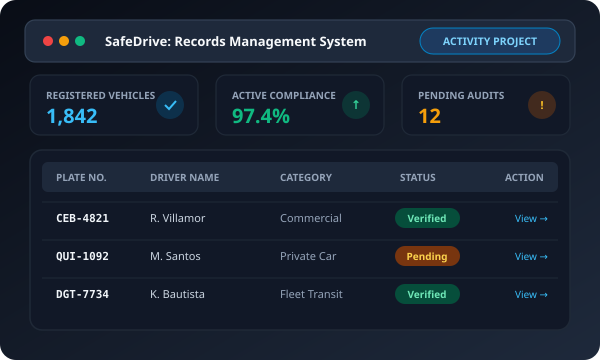
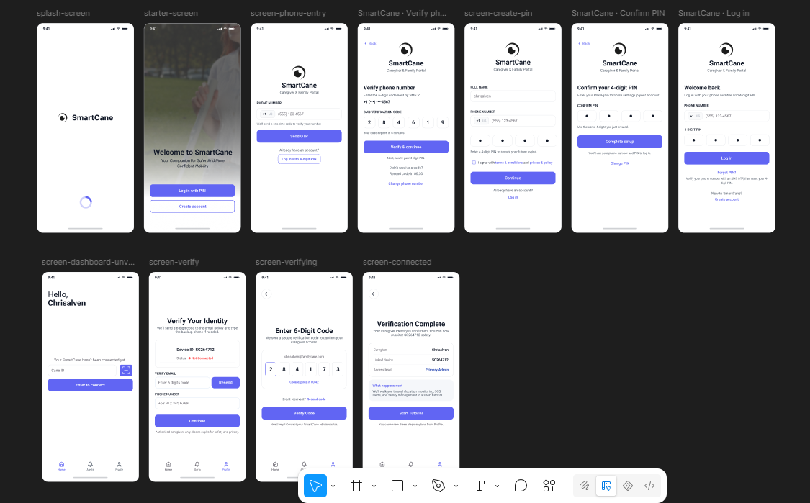
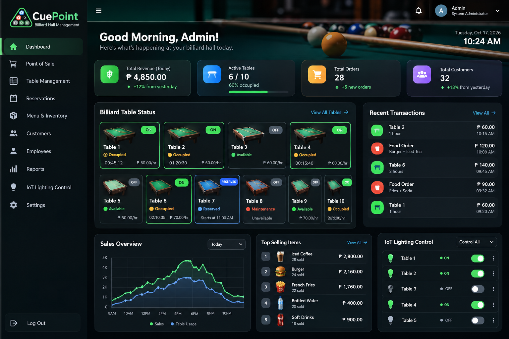
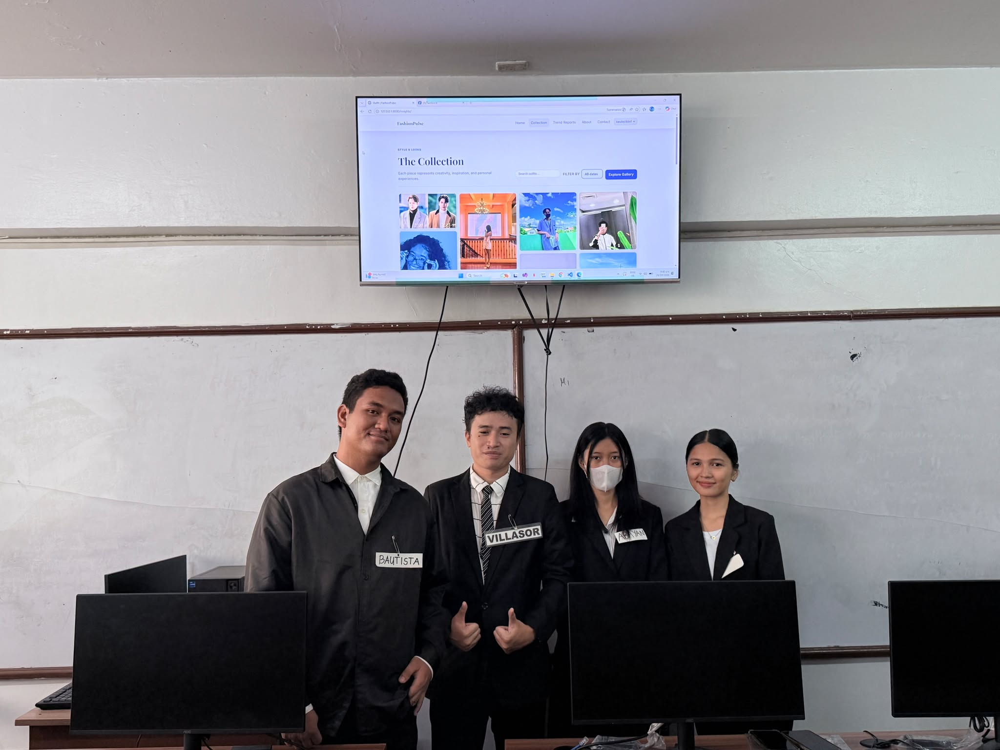

Information Technology Student • Web & AI Developer • UI/UX Designer
BSIT student at Cebu Eastern College with practical experience building database-driven
web applications, AI-integrated software, and intuitive user interfaces. Passionate about
crafting purposeful digital solutions through clean code, modern frameworks, and emerging AI tools.
A motivated Information Technology student dedicated to developing real-world, user-first web applications and intelligent AI solutions.
Crafting practical software with clean design and AI integration
I am currently pursuing a Bachelor of Science in Information Technology (BSIT) at
Cebu Eastern College (2023 - 2026). Prior to college, I graduated from the
STEM Strand at Don Vicente Rama Memorial National High School, building a solid foundation in
mathematics, analytical problem solving, and technological innovation.
My focus centers on database-driven web applications, modern front-end engineering,
and applied AI development. Through academic capstones, class activities, and independent projects,
I have practical experience combining technologies like JavaScript, Node.js, Python, Django, SQLite, Tailwindcss, and Antigravity
with AI models like OpenAI GPT-4o.
Beyond coding, I strongly value design aesthetics and intuitive user experiences. Using tools like Figma, Canva, and Photopea,
I ensure that every system I build is not only functional and secure under the hood, but also visually appealing and accessible for everyone.
Quiot, Cebu City, Philippines
Cebu Eastern College (BSIT)
Graduating Class of 2026
Open to Projects & Collaborations
4+
Featured Projects (Capstone & Academic)
3+
Years Continuous IT & STEM Education
12+
Languages, Frameworks & Media Tools
100%
Dedication to Practical Tech Solutions
Technical Competencies
Skills & Technologies
An honest overview of my current capabilities across software development, AI tooling, database systems, and visual design.
Figma (UI/UX & Wireframes)CanvaPhotopeaCapCut Video EditingGraphic DesignPrototyping
🤝
Professional Strengths
Team CollaborationNetworking FundamentalsProblem SolvingTechnical DocumentationAgile Task Management
Portfolio Showcase
Featured Projects
Class activities, personal projects, and capstone work demonstrating full-stack problem solving, AI integration, and user-centric design.

Activity Project
SafeDrive: Records
A streamlined vehicle safety and traffic violation logging system designed to replace cumbersome paper logs with an instant search, driver verification, and compliance status dashboard.
My Contribution:
Designed complete user flows in Figma, programmed dynamic table filtering and status logic in vanilla JavaScript, and styled with Tailwindcss.
JavaScriptFigmaTailwindcss

Capstone Project
SmartCane: Assistive Navigation Device
An innovative assistive system designed for visually impaired individuals, combining ultrasonic obstacle detection sensors with an accessible, high-contrast web dashboard and Antigravity automated alerts.
My Contribution:
UI/UX wireframing and prototyping in Figma, responsive frontend interface implementation with Tailwindcss, and Antigravity workflow rule integration.
FigmaJavaScriptAntigravityTailwindcss

Activity Project
CuePoint: AI Presentation Prompter
An intelligent presentation companion that monitors speaking cadence in real time and utilizes OpenAI GPT-4o to provide dynamic speaker cues, pacing warnings, and slide transition reminders.
My Contribution:
Implemented Node.js server endpoints connected to OpenAI GPT-4o API, structured low-latency cue prompts, and engineered the interactive prompter display.
Node.jsOpenAI GPT-4oJavaScript

Activity Project
FashionPulse: Lookbook & Apparel
A dynamic fashion lookbook and apparel catalog platform engineered to explore clothing trends, manage collection inventories, and provide real-time dynamic outfit filtering.
My Contribution:
Developed Django backend models and views for catalog management, built interactive search and style categorization logic in JavaScript, and designed a responsive catalog showcase interface.
PythonDjangoJavaScript
Academic Journey
Education & Training
My formal academic milestones shaping my technical perspective and software development capabilities.
2023 – 2026 (Present)
Bachelor of Science in Information Technology (BSIT)
Cebu Eastern College • Cebu City, Philippines
Currently engaged in advanced IT coursework focusing on full-stack application development,
relational database management systems (RDBMS), enterprise networking architectures, and
collaborative software engineering practices.
Web DevelopmentDatabase ManagementNetworking & InfrastructureSystems Analysis & Design
2017 – 2023
Junior and Senior High School
Don Vicente Rama Memorial National High School
Completed secondary education under the STEM Strand (Science, Technology, Engineering, and Mathematics).
Developed foundational skills in algorithmic logic, statistical analysis, computer research, and collaborative project defense.
STEM Academic StrandFoundational ProgrammingScientific Research
Let's Connect
Get In Touch
Whether you have an inquiry, feedback on my projects, or an opportunity for collaboration, I’d love to hear from you.
Direct Contact Channels
Feel free to reach out directly via email, phone, or connect with me on GitHub and LinkedIn. I typically reply within 24 hours.